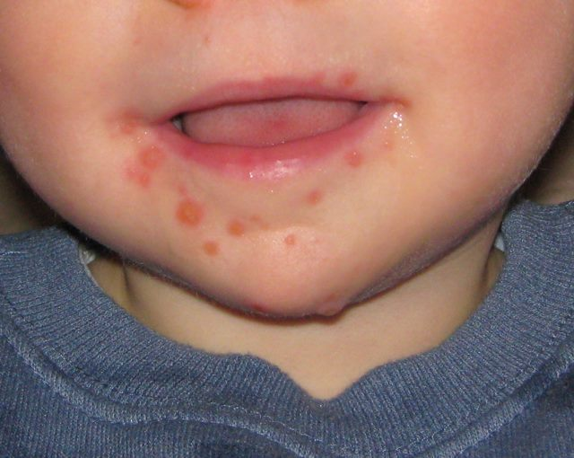

손 피부질환, 증상만 보고 판단 말아야… "정확한 진단이 먼저"
손에 생기는 피부질환은 겉으로 보이는 증상이 비슷해 자가 판단이 어렵다. 전문가들은 증상만으로 약을 고르기보다 진단을 먼저 받도록 권한다.
임숙분 기자 · 2026.09.13
橋사회

손에 생기는 피부질환은 일상생활에 주는 불편이 크다. 손을 자주 쓰는 데다 물과 세제에 노출되는 빈도가 높아 증상이 잘 낫지 않는 경우가 많다.
광고 문의 · 300×250문제는 겉으로 드러나는 증상이 서로 비슷하다는 점이다. 접촉성 피부염, 습진, 진균 감염, 건선은 모두 붉어짐과 각질, 갈라짐을 동반할 수 있다.
원인이 다르면 치료도 달라진다. 곰팡이 감염에 스테로이드 연고를 바르면 증상이 일시적으로 완화되는 것처럼 보이다가 범위가 넓어지는 경우가 있다.
전문가들은 증상만 보고 약을 고르기보다 진단을 먼저 받도록 권한다. 필요한 경우 현미경 검사나 배양 검사를 통해 원인을 확인한다.
생활 습관도 경과에 영향을 준다. 물 작업 시 장갑 사용, 세정 후 보습, 손 소독제의 과도한 사용 자제가 기본으로 제시된다.
직업적으로 물이나 화학물질을 자주 다루는 경우에는 재발이 잦다. 이 경우 작업 환경 조정이 치료의 일부로 다뤄진다.
증상이 오래가거나 손톱 변화가 함께 나타나면 진료를 미루지 않는 편이 좋다는 것이 공통된 조언이다.
출처·참고 (사실 확인용 — 본문은 직접 재작성)
· https://www.khan.co.kr/
· https://www.khan.co.kr/